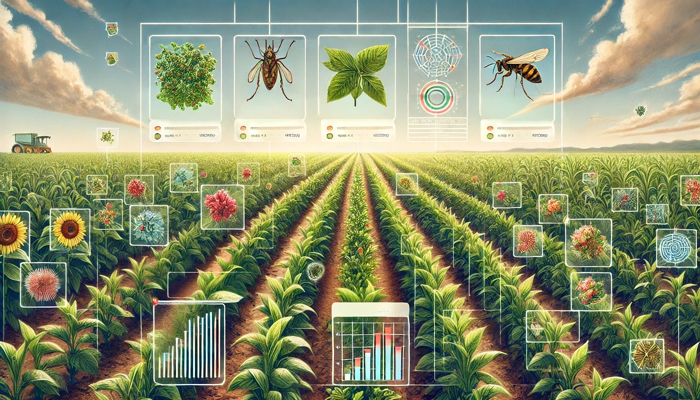
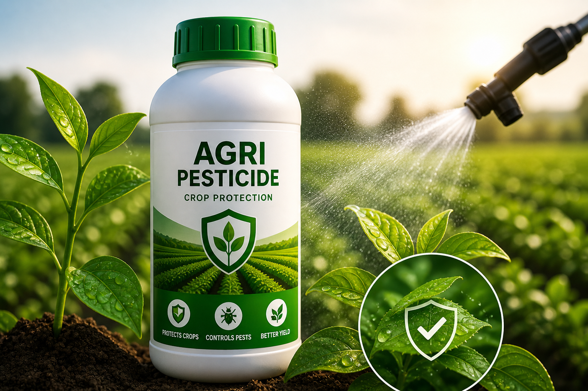
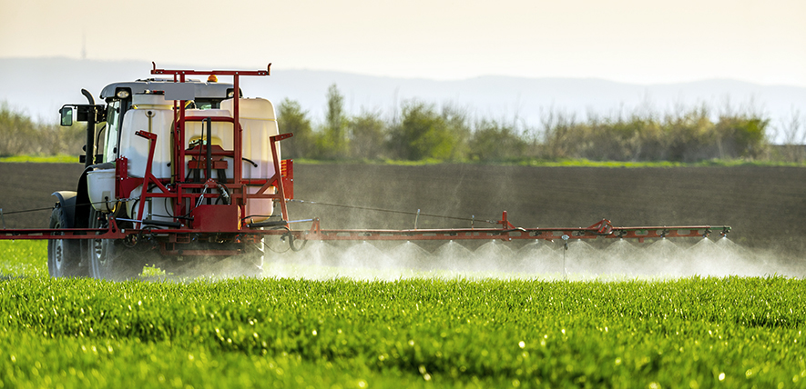
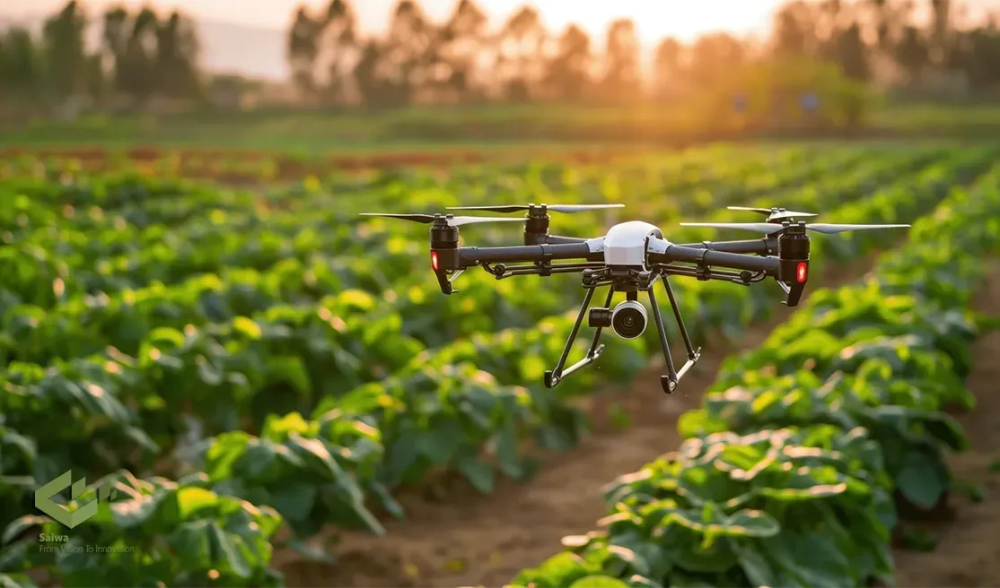
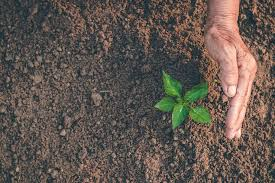
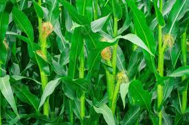

Empowering Farmers with Smart Decisions
🚜 Modern Technology for Farmers | 🌾 Healthy Crops | 🛡 Smart Pest Protection

Based on your entered crop type, soil condition, weather details, and pest symptoms, here is your personalized pesticide recommendation for better crop health and productivity.
🌱 Accurate Result | 🌍 Scientific Farming | 🚜 Better Yield | 🐛 Smart Pest Control
✅ Provides best pesticide recommendation
✅ Reduces crop damage risk
✅ Improves farming productivity
✅ Supports smart agricultural decisions
| 🌾 Crop Type | Cotton |
|---|---|
| 📅 Growth Stage | Vegetative |
| 🌿 Crop Age | 60 Days |
| 🌍 Soil Type | Black Soil |
| 💧 Soil Moisture | 75% |
| ⚗ Soil pH | 6.8 |
| 🌦 Weather | Humid |
| 🌡 Temperature | 30°C |
| 💧 Humidity | 80% |
| 🐛 Pest Type | Aphids |
| ⚠ Severity | High |
| 📝 Symptoms | Leaf curling and yellow spots |

💧 Dosage: 25ml per 15L water
⏰ Spray Timing: Early Morning / Evening
📅 Repeat Spray: Every 10 days if necessary
🛡 Safety: Use gloves, mask, and proper dosage
🌾 Expected Crop Protection: 95%
Choose your next step for smart farming support:
🌱 Follow these smart steps after prediction 🌱




🛡 Safe Spray ➝ 🌾 Monitor Crop ➝ 🌍 Improve Soil ➝ 🚜 Protect Field ➝ 🌱 Better Yield
🌱 Use scientific pesticide management.
🛡 Protect environment and crop health.
🚜 Smart farming ensures better yield.
Prediction Confidence:
96% Accurate Recommendation
Crop Safety Score:
🌱 Excellent Crop Protection Potential
Based on crop, soil, weather, and pest analysis.
No, pesticide recommendations vary by crop and pest type.
Safe pesticide use protects health, crops, and environment.